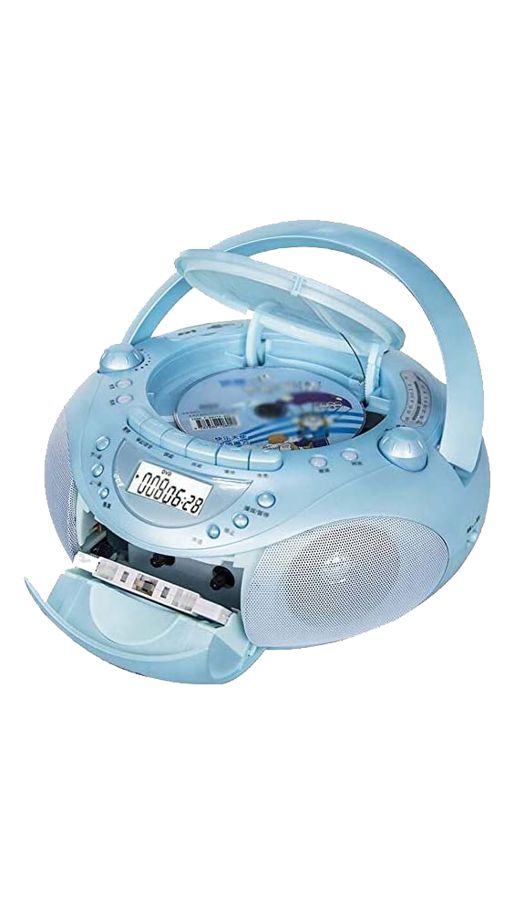
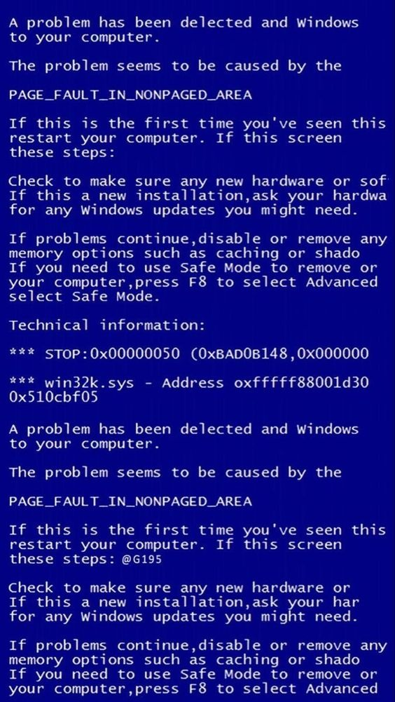
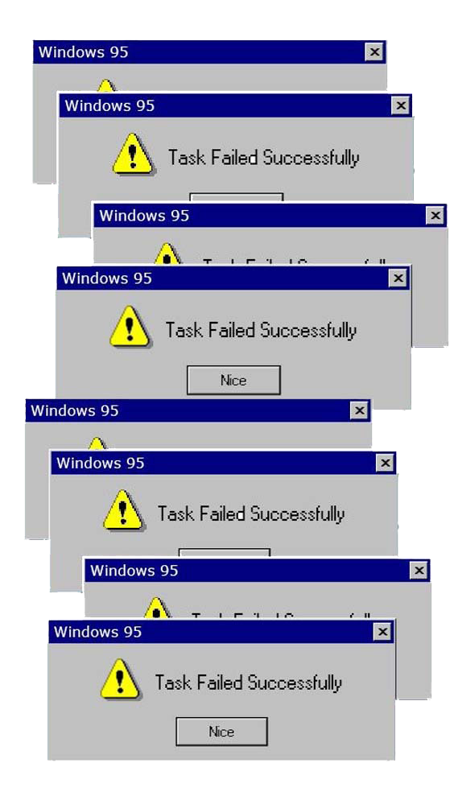

PPPORTFOLIO
Sobre mi
Me considero una persona bastante curiosa y con ganas de aprender siempre algo nuevo, así como de poder poner en práctica todo lo aprendido para obtener resultados. Estoy muy interesada en el mundo de la tecnología, la comunicación y todo lo referente a la Web y los usuarios de la misma, razón por la que decidí estudiar un Título Superior de Desarrollo Web y Marketing Digital. Siempre estoy buscando y enfrentando nuevos retos. Dentro de mis objetivos profesionales a corto plazo, me encantaría realizar unas prácticas en las que pueda seguir aprendiendo cosas nuevas al mismo tiempo que pongo en práctica todo lo que sé.
Pruebas
Durante la duración de este primer módulo, se han realizado de forma independiente las siguientes pruebas. Todas ellas con el fin de poner en práctica lo aprendido en clase y poder trastear todo lo se quisiese, sobre todo con aquellas herramientas más relacionadas con los estilos.
FlorenceEsta prueba de una página que tomó como referencia un disco del grupo Florence and The Machine se inició al principio del curso.
From F to CFrom F to C fue una ejercicio se hizo para probar a traspasar un diseño de una página de figma a código.
 M y PMargin y Padding es una de las primeras pruebas que se hicieron para aprender que aunque lo parezcan, estas herramientas no son iguales.
 CuadradosEste fue la primera prueba de todas y la verdad la más divertida después de haber empezado las primeras clases.
